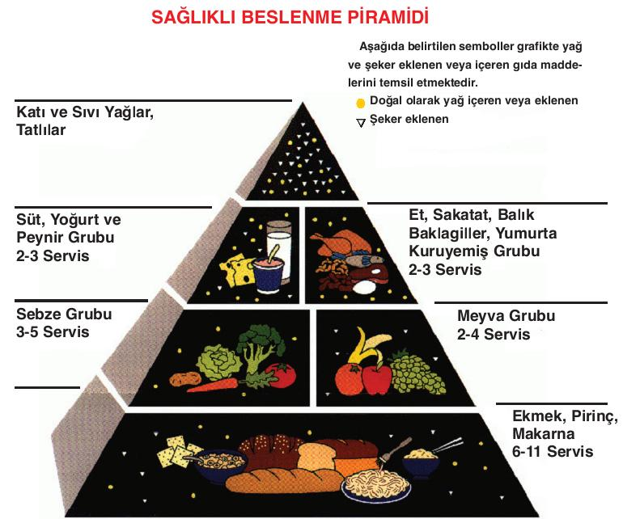
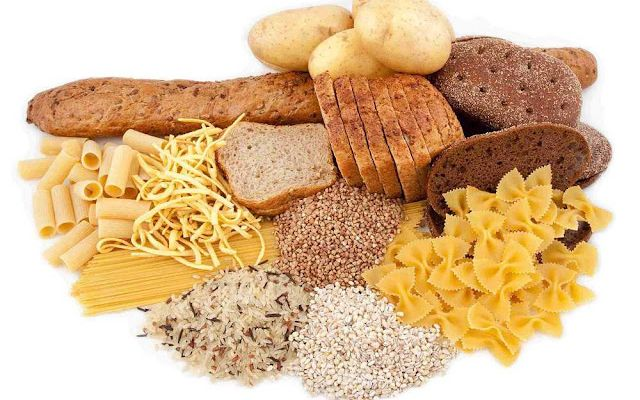
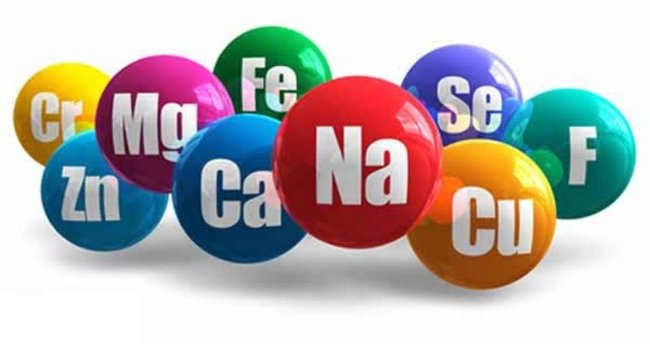
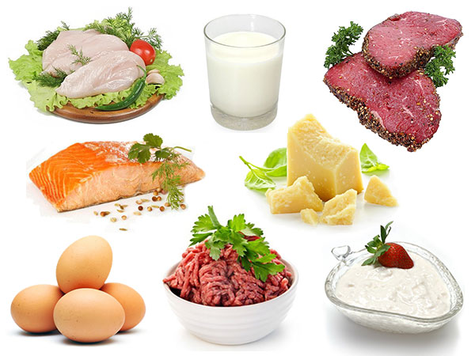
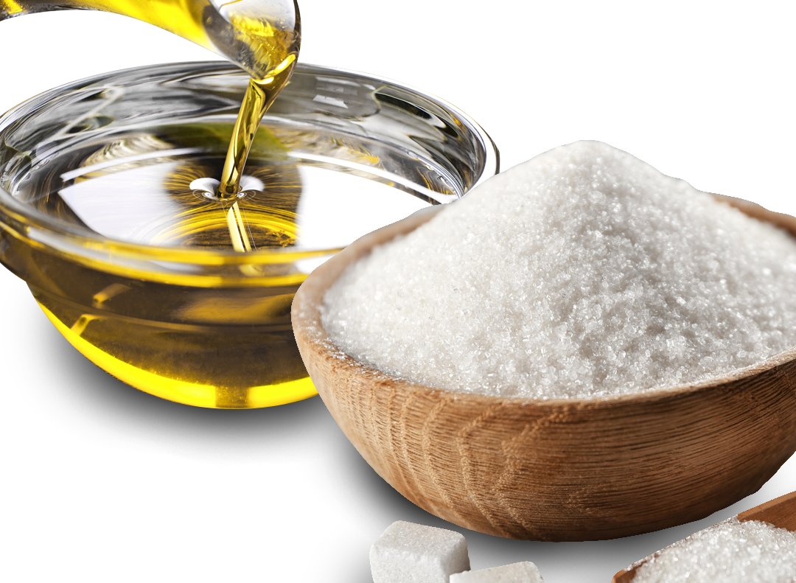

SAĞLIKLI BESLENME
Sağlıklı beslenme yeterli ve dengeli beslenmedir.Vücudumuzu oluşturan hücrelerin düzenli ve dengeli çalışması için besin öğelerinden yani yağlar, karbonhidratlar, proteinler, vitaminler ve minerallerden yeterli miktarda almalıyız. Vücudumuzun tüm besin maddelerine ihtiyacı vardır. Tek taraflı beslenmek yani sadece protein veya karbonhidratla beslenmek yanlıştır. Dengeli beslenerek vitaminler, mineraller ve lifler gibi önemli besin maddelerinden de almış oluruz.
Beslenme Piramidi

Beslenme piramidi 5 ana besin grubunu içerir. Piramit en altta yer alan ve sıklıkla tüketilmesi gereken karbonhidratlarla başlar ve daha az tüketilmesi gereken gıdalara doğru gider. Bu besin grupları karbonhidratlar, mineraller, proteinler, yağ ve şekerdir.Beslenme piramidi gıdaların doğru seçimi için rehberiniz olmalıdır.
Karbonhidratlar

Alt grupta yer alan ve sıklıkla tüketilmesi gereken gıdalardır. Karbonhidratlar pirinç, bulgur, makarna gibi tahıllardır.
Mineraller

Sağlıklı yaşam için gereklidir. Mineraller (kalsiyum, bakır, iyot, demir, çinko vb.) sebze ve meyvelerde bulunur, hücre korunması ve sağlıklı diş, kemik, cilt yapısı için önemlidir. Mineraller ayrıca kalp ritmi, kan basıncı, vü dengesi gibi daha birçok düzenleyici fonksiyonlarda rol oynar.
Proteinler

Vücudun en etkili kalori yakıcı bölümü olan kas dokusunu güçlendirmek açısından çok önemlidir. Protein ette, süt ürünlerinde ve daha az olarak hububat ürünlerinde bulunmaktadır.
Yağ ve Şeker

Yağ ve şeker, çok az tüketilmesi gereken gıdalardır fakat A, D, E ve K vitaminleri gibi vücudumuz için önemli vitaminleri taşıma görevi yaptıklarından dolayı sağlığımız için yenilmesi de çok önemlidir. Sıvı ve katı yağlar, şeker ve tatlılar bu grupta yer alır.
Dengeli Beslenme Önerileri
Doymuş yağ (tere yağ, kuyruk yağı) oranı yüksek besinleri daha az tüketin.Yeterli miktarda doymamış yağ (ay çiçek, mısırözü, soya, fındık, zeytin yağı) almaya dikkat edin. Yarım yağlı süt, yağsız yoğurt tüketin.Yağlı kırmızı et yerine yağsız et, kuru baklagiller (nohut, mercimek, fasulye gibi) balık ve tavuk tercih edin. Süt ve süt ürünleri de (yoğurt, peynir vb.) tüketilmeli fakat bunlarında az yağlı olmalarına dikkat edilmeli.Yemeklerinizi haşlama, fırında pişirme veya ızgarada pişirme yöntemleriyle pişirirseniz yemeğe eklenecek yağıda azaltmış olursunuz.
Aşırı şekerli gıdalardan kaçınmalı ve hatta çay, kahve gibi içecekler şekersiz içilmeli veya şeker miktarı azaltılmalıdır.
Gıdalardan aldığımız günlük tuz miktarı 6 gr.ı (bir tatlı kaşığı) geçmemelidir. Bu miktara yemeklerden, ekmekten, içeceklerden aldığımız tuz miktarı dahildir. Tuz tüketimi ile yüksek tansiyon arasında ilişki bulunmaktadır. Yüksek tansiyonu olanlar doktorlarının tavsiyesine göre ya hiç tuz kullanmamalı yada miktarını azaltmalıdır.
Güne kahvaltınızı yaparak başlayın. Gece boyu gıda alımı olmadığından beyninizin sabah kalkınca enerjiye ihtiyacı vardır. Daha sonra gıda alımınızı kahvaltıdan başlayarak gün içine yaymanız daha etkin kalori yakmanıza neden olur.Öğünlerinizi önceden belirleyiniz.Mümkünse yediklerinizi 3 ana öğün, 3ara öğüne bölün az ve sık beslenin.Bol su için, yiyecekleri iyice çiğneyin. Her yemek yediğinizde midenin 1/3’ünü boş bırakın. Tam olarak dolu mide sağlığımızın zaman içinde bozulmasına ,erken yaşlanmaya neden olur.Midenizi katı gıdalarla doldurmayın .Katı gıdalarla dolu mide içeriğinin gerekli öz suyu her tarafa dengeli ulaştırması güçleşir ve sindirim zorlaşır. Düzenli yemek yiyenler daha dengeli ve sağlıklı beslenmekte ve ideal kilolarını korumaktadırlar.
Zihinsel faaliyetlerin gerektirdiği enerji kaynaklarının en önemlilerinden biride meyvelerdir. Beynin oksijen dışındaki tek enerjisi glikozdur. Glikoz meyvelerde hazır halde bulunur. Diğer gıdalarla alınan şeker midede yakılarak glikoza çevrilir. Bu nedenle meyveleri aç karnına yemeliyiz.Meyveler yemeklerden 30 dakika önce veya 3 saat sonra alınmalıdır.Mide doluyken alınan meyveler midede kalıp besin değeri kaybolup orada mayalanacağı için bütün sindirim sistemimizi yorar.
Vücudumuzda dakikada 10 milyon hücre ölür ve bir o kadarı da yenilenir. Ortalama 100 günde (beyin ve sinir hücreleri hariç) bütün vücudumuz yenilenir.Düzensiz kötü beslenme yenileme sistemini aksatır. Cildiniz canlılığını, tazeliğini kaybeder ve en önemlisi hastalıklara açık olursunuz. Yorgunluk, çabuk yorulma, baş ağrısı olabilir. Düşünce ve hafıza sistemi bulanıklaşır.Bu nedenlerden dolayı düzenli ve sağlıklı beslenmeye dikkat etmeli ve yemek için yaşamamalı sadece yaşamak için yemeli görüşünü benimsemeliyiz